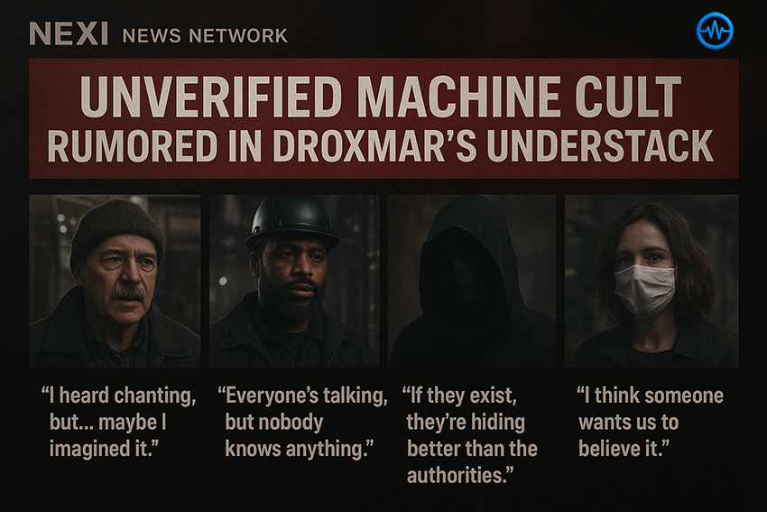
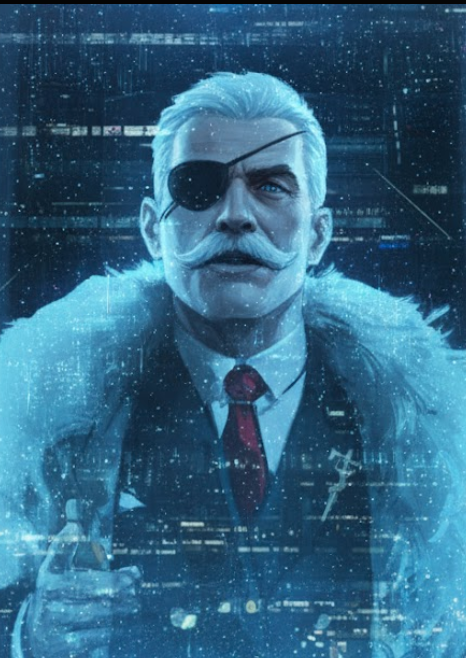

Cycle 2697.04.21 • Spherewide Feed
Droxmar Prime rumors sync across districts about a Machine-Son’s Covenant that leaves no icons, meeting sites, or intercepted signals—only whispers no one recalls hearing first.

Cycle 2697.03.08 • Syndicate Wire Investigative Desk
Underground sources allege Owl Yamato survived Droxmar’s fall and is reviving the Syndicate with hidden factories, renewed debts, and a rumored restart of the battle droid lines.

Cycle 2697.02.14 • Nexi Net Sponsored Desk
A sponsored report alleges Orion Industry now asserts proprietary control over multiple planets and will sanction any faction that “violates their territorial rights,” stoking accusations of corporate overreach and legal overstep.

Cycle 2697.01.17 • Gona Frontier Desk
A crystalline-plated megafauna marches across Inomis, secreting memory-rich Lume Resin and igniting a scramble among Guild scientists and illicit brokers alike.

Cycle 2696.11.22 • Closer-To-The-Stars
A scrambled signal reveals Aurelia Cirie-Swan may be trapped near Nova territory while carrying twins, thrusting Orion Industries into a blackout rescue mission led by the 2nd Security Echelon and the Inquisitor fleet.

Cycle 782.24 • Aegir Sector News Bureau
The Federation activates Operation Continuum Anchor after Orxas declares independence, dispatching the 7th Expeditionary Fleet, Groundline regiments, and orbital assets to secure the system.

Cycle 2696.11.12 • Nexi News
Orion Industries researchers confirm a nine-hundred-meter abyssal organism that feeds on geothermal heat and excretes empathic Vireline extract, igniting ethical alarms and black-market fervor across the Federation.

Cycle 2696.11.18 • Aegir Sector Business News
Orion Industries CEO Alpheus Orion Cirie defines “Aggressive Expansion Practices,” routes violators to OISF review, and warns that economic and military sanctions await any empire pushing beyond two FTL jumps from its claimed borders.

Cycle 782.19 • Nexi Exclusive
Helga Britannia speaks on ruling through resonance, skirmishes with Dominion clergy, and why even rusted stations deserve an anthem in this Nexi Exclusive.

Cycle 2696.11.14 • Closer-To-The-Stars
Aurelia Cirie and Darius Swan’s gravity-defying vows halt Ida’s skyline traffic, blend empire-scale opulence with heartfelt tributes, and launch the Orion Sector’s newest power couple era.